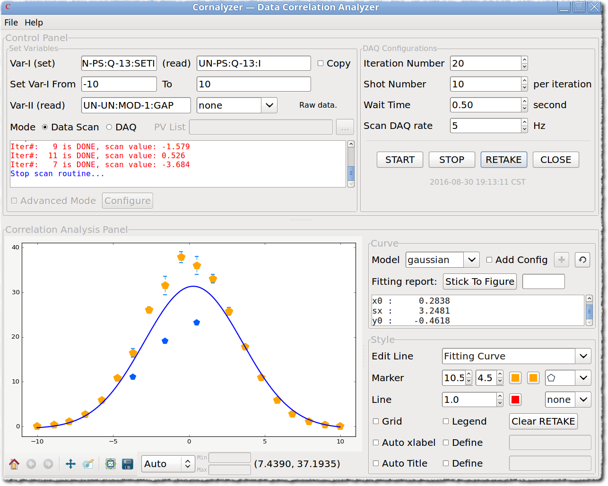

Example 3¶
cornalyzer – Parameter correlation analysis app.
Introduction¶
If the user wanna analysis the correlation between parameters, cornalyzer could help.
Presently, main features that cornalyzer provides are:
- Two dimensional parameters correlation analysis;
- post-processor could be applied to the second dimension
Data plot with x/y errorbars;
- Curve fitting, support both polynomial and gaussian;
- additional fitting paramters
- Plenty of operations on the figure:
- Line/marker/errorbar style
- Labels, title, legend, text of fitted information
- Data range control
Re-take the selected variable points for correction by
RETAKEbutton;Save the analysis result.
Usage Guide¶
Open the cornalyzer app, like the following image shows, currently only Data Scan mode is
supported.
{kind=link}
Data Scan Guide¶
Input the EPICS PV string names in the Set Variables panel, Var-I should be treated as the
first dimension of the analysis, i.e. the paramter to be altered, since the set and read of
Var-I usually are controlled by two different PV strings, so two input boxes should be filled
correctly [1]. The Var-II is the parameter that to be monitored as Var-I is tunning,
post-processing operations could be applied to the raw data that read from the EPICS PV string of
Var-II, click the combobox right next the input box of Var-II, choice could be one of
none, sum, max, min and user-defined, the meaning could be found on the
right side hint text.
{kind=link}
Click user-defined option will pop up a window, browse the Python module that contains
user-defined functions to load [2], below is the example of user-defined Python module:
"""
user-defined functions to process A, where
A could be any type of:
1. array, 1D or 2D,
3. scalar, float, integer,
Usually, the raw value of A could be retrieved by caget(PV_string)
This script/module is potentially be used by 'cornalyzer',
i.e. correlation analyzer application, to apply post-processing
procedure on the scan dependent variable.
Created: 2016-07-14 14:59:11 PM CST
"""
import numpy as np
def f_fft(x):
""" return frequency
"""
f = abs(np.fft.fft(x))
idx = np.where(f==f.max())[0][0]
return idx
def f_magnify(x):
""" multipy by 10 folds
"""
a = 10
return x * a
def f_shrink(x):
""" half value
"""
a = 0.5
return x * a
def f_cos(x):
""" return sum of cos(x)
"""
return np.sum(np.cos(x))
Choose the function to be applied on Var-II, push OK to return to the main window.
Note
Tips to write the user-defined functions:
- Naming the function with meaningful strings;
- Keep function as simple as possible;
- Always write doc string (strings wrapped by
"""), which will appear as theNotefield to help understanding.
The meanings of other scan parameters could be get hint from the tool tips when the mouse hovers
over the controls, e.g. Iteration Number is the total counter of Var-I scan array
(equally spaced) that to be altered, Shot Number is the total counter of the fetched data
for every iteration, and Scan DAQ rate is the DAQ frequency, e.g. scan configurations like:
Iteration = 20, Shot Number = 10, Wait Time = 0.5 and Scan DAQ rate = 5 Hz tell
the app that alter the Var-I parameter from the min (-10) to max (10) with equal step,
until the step counter reaches 20, and for each variable update procedure, the global timer
should wait 0.5 second [3], in each step, the DAQ system should be working to retrieve the
data (Var-II with proper operation) with the speed of 0.2 second per shot, until get
10 shot in total, this is one iteration.
Click START to start the scan procedure, and STOP to stop any time, scan log will show
in the textbox, beginning with Iter#... for each iteration.
{kind=link}
Curve Plot Tunning¶
cornalyzer is designed with the intention of generating publish-quality artwork for the data
sharing and distributing.
Curve Fitting¶
When the scan procedure is done, pop up dialog will show the warning that the scanned data could
be saved by CTRL+S, while it is recommanded that trig saving action when proper fitting model
be applied.
In the Curve panel, choose Model to apply proper fitting model, e.g. gaussian,
polynomial, the option none means not fitting the curve. In this example gaussian
should be selected, blue gaussian shaped line (fitted average every iteration line)
will be drawn onto the figure.
{kind=link}
Note
Additional parameters are also provided to make the curve fitting module more flexible, follow the steps to do this:
- Check
Add Config, click+button to add parameters, just like the following image shows;- Valid parameters:
n, the highest order for the polynomial fitting model;xminandxmax, to fix the fitting range along x-axis.
{kind=link}
Todo
user-defined option should be added into the Model combobox, such that to handle
more curve fitting scenarios.
Curve Style¶
To adjust the style of the curves is of significance to make high-quality artworks, fortunately,
Python package — matplotlib is dedicated to accomplish such mission.
There are three options in Edit Line combobox, choose any one of them to apply proper style
configurations below, e.g. line style, line color, line thinkness, marker style, marker color,
maker size, etc., as well as putting legend, title, labels onto figure, moreover the fitting
functions with fitting parameters could be annotated, which supports mouse dragging to
reposition [4].
If Auto xlabel is checked, the xlabel will be assigned with the PV strings of Var-I and
Var-II, and if the user wanna assign with other string, just check the Define option, and
write the user-defined xlabel in the right aside textbox, Auto xlabel may be rechecked to show
the new xlabel; the same rule applies to the Auto Title options [5].
{kind=link}
Bonus Feature¶
Sometimes, the user may demand that some iterations should be processed again, that means the
data point should be retaken, no matter what reasons should be relied on, there should be
some feature to accomplish such task, then the RETAKE button is created.
Warning
Only RETAKE when you have every reason that the data point(s) to be replaced
is(are) wrong or flawed, e.g. then the machine was not that stable, believed the large jitter
was caused by some malfunction of some power sources, etc., In a word, let the SCIENTIFIC
DATA be more convinced.
In order to demonstrate the RETAKE feature, the data generator has been changed little,
e.g. add more noise, just like the following image shows, three evident points with relatively
large errorbar could be treated as wrong points, and need to be fixed [6]. To RETAKE,
first select the point(s) to be retaken by clicking mouse onto the point(s), the selected point(s)
should be highlighted, then push RETAKE button to start retaken procedure.
{kind=link}
The wrong points have been pushed back.
{kind=link}
Apply fitting function by refresh button, right aside of +, to get final figure.
{kind=link}
Scan Data¶
CTRL+S could save all the data into defined file, including raw and fit data,
e.g. see below image:
{kind=link}
Footnotes:
| [1] | copy checkbox could be used to quickly copy set value into read field. |
| [2] | The Python module file is a normal Python script that has funtion definitions, it is the user’s liability to manage this file. |
| [3] | The data that used by example shown here is provided by a soft-IOC, with the scan frequency of 5 Hz, while for the real machine, e.g. Dalian Coherent Light Source (DCLS), tests show that 10-20 second may require so as to get valid signals. |
| [4] | Push Stick To Figure button will draw the fitting function onto figure
(the grey box in the above image), control the position could be by mouse dragging or input
proper parameters, e.g. input x=0;y=0 in the textbox right aside of
Stick To Figure button will move the grey box to (0,0),
another valid parameter is fontsize, which could be used to control the text font size,
details could be reached when the mouse hovers over the textbox. |
| [5] | When the Define checkbox right aside of Auto Title is checked, in the user-defined
title string, macro $TITLE could be used to substitute the default title string that
Auto Title uses. |
| [6] | Just increase the noise level in the data generating process (soft-IOC side)
to magnify this effect; decrease noise level before RETAKE is performed,
to mimic that machine status is back to stable or acceptable. |